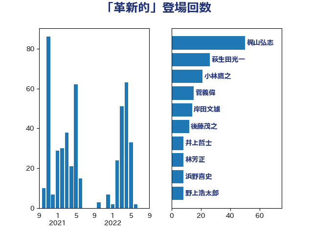

単語「革新的」

| 梶山弘志 | 自由民主党 | 50 回 |
| 萩生田光一 | 自由民主党 | 26 回 |
| 小林鷹之 | 自由民主党 | 21 回 |
| 菅義偉 | 自由民主党 | 15 回 |
| 岸田文雄 | 自由民主党 | 14 回 |
| 後藤茂之 | 自由民主党 | 12 回 |
| 井上哲士 | 日本共産党 | 8 回 |
| 林芳正 | 自由民主党 | 8 回 |
| 浜野喜史 | 国民民主党 | 8 回 |
| 野上浩太郎 | 自由民主党 | 8 回 |
| 井上信治 | 自由民主党 | 6 回 |
| 佐藤啓 | 自由民主党 | 6 回 |
| 小泉進次郎 | 自由民主党 | 6 回 |
| 武田良太 | 自由民主党 | 6 回 |
| 田村憲久 | 自由民主党 | 6 回 |
| 斎藤洋明 | 自由民主党 | 5 回 |
| 伊藤岳 | 日本共産党 | 4 回 |
| 吉田統彦 | 立憲民主党 | 4 回 |
| 新妻秀規 | 公明党 | 4 回 |
| 末松信介 | 自由民主党 | 4 回 |
| 江島潔 | 自由民主党 | 4 回 |
| 野田聖子 | 自由民主党 | 4 回 |
| 中西祐介 | 自由民主党 | 3 回 |
| 山口那津男 | 公明党 | 3 回 |
| 横山信一 | 公明党 | 3 回 |
| 源馬謙太郎 | 立憲民主党 | 3 回 |
| 田村まみ | 国民民主党 | 3 回 |
| 緑川貴士 | 立憲民主党 | 3 回 |
| こやり隆史 | 自由民主党 | 2 回 |
| 三浦信祐 | 公明党 | 2 回 |
| 三浦靖 | 自由民主党 | 2 回 |
| 中川宏昌 | 公明党 | 2 回 |
| 佐藤英道 | 公明党 | 2 回 |
| 塩川鉄也 | 日本共産党 | 2 回 |
| 太田房江 | 自由民主党 | 2 回 |
| 岸信夫 | 自由民主党 | 2 回 |
| 浅野哲 | 国民民主党 | 2 回 |
| 田村智子 | 日本共産党 | 2 回 |
| 畦元将吾 | 自由民主党 | 2 回 |
| 福島みずほ | 社会民主党 | 2 回 |
| 竹谷とし子 | 公明党 | 2 回 |
| 笠井亮 | 日本共産党 | 2 回 |
| 笹川博義 | 自由民主党 | 2 回 |
| 葉梨康弘 | 自由民主党 | 2 回 |
| 金村龍那 | 日本維新の会 | 2 回 |
| 関芳弘 | 自由民主党 | 2 回 |
| 音喜多駿 | 日本維新の会 | 2 回 |
| 一谷勇一郎 | 日本維新の会 | 1 回 |
| 上野通子 | 自由民主党 | 1 回 |
| 下村博文 | 自由民主党 | 1 回 |
| 世耕弘成 | 自由民主党 | 1 回 |
| 中村裕之 | 自由民主党 | 1 回 |
| 伊藤孝恵 | 国民民主党 | 1 回 |
| 勝俣孝明 | 自由民主党 | 1 回 |
| 土屋品子 | 自由民主党 | 1 回 |
| 堀井巌 | 自由民主党 | 1 回 |
| 堤かなめ | 立憲民主党 | 1 回 |
| 塩田博昭 | 公明党 | 1 回 |
| 大西健介 | 立憲民主党 | 1 回 |
| 大野敬太郎 | 自由民主党 | 1 回 |
| 宮内秀樹 | 自由民主党 | 1 回 |
| 宮本周司 | 自由民主党 | 1 回 |
| 尾身朝子 | 自由民主党 | 1 回 |
| 岩渕友 | 日本共産党 | 1 回 |
| 島村大 | 自由民主党 | 1 回 |
| 川合孝典 | 国民民主党 | 1 回 |
| 平木大作 | 公明党 | 1 回 |
| 平林晃 | 公明党 | 1 回 |
| 徳永エリ | 立憲民主党 | 1 回 |
| 斉藤鉄夫 | 公明党 | 1 回 |
| 斎藤嘉隆 | 立憲民主党 | 1 回 |
| 本村伸子 | 日本共産党 | 1 回 |
| 松野博一 | 自由民主党 | 1 回 |
| 柴田巧 | 日本維新の会 | 1 回 |
| 梅谷守 | 立憲民主党 | 1 回 |
| 池下卓 | 日本維新の会 | 1 回 |
| 浅田均 | 日本維新の会 | 1 回 |
| 浜地雅一 | 公明党 | 1 回 |
| 滝波宏文 | 自由民主党 | 1 回 |
| 熊谷裕人 | 立憲民主党 | 1 回 |
| 田中英之 | 自由民主党 | 1 回 |
| 石井啓一 | 公明党 | 1 回 |
| 石井正弘 | 自由民主党 | 1 回 |
| 石井苗子 | 日本維新の会 | 1 回 |
| 石田真敏 | 自由民主党 | 1 回 |
| 礒崎哲史 | 国民民主党 | 1 回 |
| 福島伸享 | 無所属 | 1 回 |
| 稲田朋美 | 自由民主党 | 1 回 |
| 竹内真二 | 公明党 | 1 回 |
| 紙智子 | 日本共産党 | 1 回 |
| 細田健一 | 自由民主党 | 1 回 |
| 美延映夫 | 日本維新の会 | 1 回 |
| 舞立昇治 | 自由民主党 | 1 回 |
| 若宮健嗣 | 自由民主党 | 1 回 |
| 角田秀穂 | 公明党 | 1 回 |
| 谷川とむ | 自由民主党 | 1 回 |
| 赤池誠章 | 自由民主党 | 1 回 |
| 金子恭之 | 自由民主党 | 1 回 |
| 鈴木俊一 | 自由民主党 | 1 回 |
| 鈴木英敬 | 自由民主党 | 1 回 |
| 長友慎治 | 国民民主党 | 1 回 |
| 長坂康正 | 自由民主党 | 1 回 |
| 麻生太郎 | 自由民主党 | 1 回 |